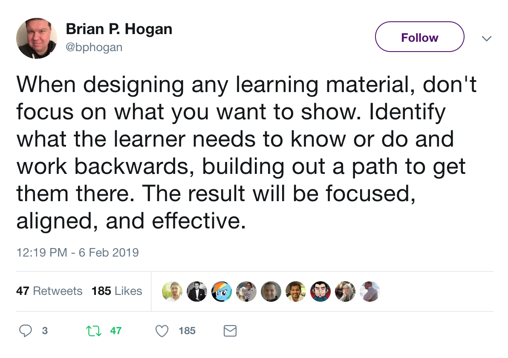

class: center, middle # Test-Driven Writing <div> <small>Presented By<br><a href="https://mherman.org">Michael Herman</a><br><a href="https://twitter.com/mikeherman">@mikeherman</a> </span> </div> --- ### Agenda -- ##### (1) Intro 1. About Me 1. Objectives -- ##### (2) Theory 1. Test-Driven Development 1. Test-Driven Writing 1. Learning to Learn -- ##### (3) Practice 1. Red 1. Green 1. Refactor -- ##### (4) Next Steps --- class: center, middle ## Intro --- ### About Michael ``` $ whoami michael.herman ``` <p style="margin:0"></p> -- #### Senior Software Engineer 1. Python and JavaScript Contractor 1. [TestDriven.io](https://testdriven.io) <a href="https://testdriven.io"> <img src="images/mobile_image.png" style="max-width: 15%; padding-top:5px; box-shadow: none;" alt="testdriven.io"> </a> -- #### Also 1. Founder and Organizer of [Node.js Meetup Group](https://www.meetup.com/Node-js-Denver-Boulder/) 1. Former Lead Instructor at [Galvanize](https://www.galvanize.com/) 1. Co-founder/author of [Real Python](https://realpython.com) 1. üòç - [tech writing/education](http://mherman.org), [open source](http://github.com/mjhea0), [financial models](http://www.starterfinancialmodel.com/), [radiohead](http://radiohead.com/) --- ### Objectives By the end of this training, you should be able to... -- 1. Describe what Test-Driven Development is and how the Test-Driven model can be applied to writing -- 1. Develop a technical blog post using the Red-Green-Refactor process -- 1. Describe the difference between a how-to article, a high-level narrative, and a list post -- 1. Explain what narrative is and why it's important -- 1. Engage in reverse-planning by writing objectives first -- 1. Describe the learning how to learn process --- class: center, middle ## Theory --- ### What is Test-Driven Development? -- [Test-Driven Development](https://en.wikipedia.org/wiki/Test-driven_development) (TDD) is a methodology in software development that focuses on an iterative development cycle where the emphasis is placed on writing test cases before the actual feature or function is written. - code, verify, repeat - design, validate, repeat -- #### TDD 1. Utilizes repetition of a short development cycle 1. Combines building and testing 1. Helps ensure correctness of code - but also helps to indirectly evolve the design and architecture of the project at hand. -- <br><br> <div style="text-align:center;"> "Code without tests is broken by design."<br>- Jacob Kaplan-Moss </div> --- ### Red-Green-Refactor -- TDD usually follows the "Red-Green-Refactor" cycle:  -- 1. It can be slower in the short-term, but it, more often than not, improves the quality of the software project in the long run. -- 1. Having adequate test coverage acts as a safeguard so you don't accidentally change the functionality. -- 1. Finally, test suites can encapsulate the expectations of your software project so that your project's stakeholders (current self, future self, everyone else) can better understand the project. --- ### Questions -- #### (1) What is Test-Driven Development? -- #### (2) Can the Test-Driven model be applied to writing? - Is there a way that you can write "tests" beforehand that tell you what to write and what not to write? - Can you "encapsulate" the expectations of your tutorial so that your readers can better understand it? - Will tests help to strengthen you thesis? - Can you make a strong, upfront case that your readers can easily assert against? ü§î --- ### Test-Driven Writing --  -- The goals are different: 1. You SHOULD NOT always adhere to the Test-Driven process! The Test-Driven model can constrain the artistic side when practiced rigidly. Constrains can be good at times, though. They can help you stay focused and keep you within scope. 1. You CANNOT fully test out your writing. ([Watson API](https://www.ibm.com/watson/services/natural-language-understanding/)?) --- ### Test-Driven Writing Process -- - Start with the **audience**, **article type**, **narrative** (e.g.,the common thread) and **objectives**. -- - Then, write out an **outline** and possibly the **conclusion**. -- - As you write out each section from the outline, look back to the **audience**, **narrative**, and **objectives** to ensure that you are staying on track. -- <p style="padding-top:20px;text-align:center"></p> --- ### Learning to Learn Developers must be lifelong learners! -- **(1) Set the Stage** - Slow down, get your mind right - Eliminate distractions - close browser tabs, silence your phone, use the Pomodoro method - Clarify your _what_ and _why_: What is it that you're trying to achieve? Why is that important? - Focus on the process - The process is much more important than the end product: - How do you approach a problem? - What do you do when you get stuck? - Can you brute force your way through? -- **(2) Play** - Wrestle with it. Take risks and experiment. The most fruitful place to be is at the edge of your ability. - Be [vulnerable](https://www.ted.com/talks/brene_brown_on_vulnerability?language=en) - Have fun! Recognize if you're in 'fight or flight' mode, and take steps to get yourself back in a positive state of mind. --- ### Learning to Learn (continued...) -- - **Reflect:** - Self assess - Ask new questions and discover new things - Provide continuous feedback - Ask the following questions at the end of each writing session: - What were my objectives? - How far did I get? - How much is left? - How was the process? - Am I on the right track? -- <br> <small> Sources: 1. http://slides.com/evanmoore/learning-to-learn 1. https://css-tricks.com/learning-to-learn/ 1. https://github.com/realpython/learning </small> --- class: center, middle ## Practice --- ### Red -- *Scenario: Your boss wants you to write an article on "Understanding OAuth 2.0 and OpenID Connect".* Where do you start? -- | Component | Description | |--------------|---------------------------------------------------------------------------------------| | Audience | Your readers (e.g., current self, future self, and outside readers) | | Article Type | How-to tutorial, high-level narrative, list post | | Narrative | What's the common thread taking the reader from the top of the article to the bottom? | | Objectives | What should your readers take away from your article? | -- <br><br> Your turn! Open up your favorite markdown editor... --- ### Red (continued...) -- **What kind of article do you want to write?** 1. How-to tutorial (short code snippets, practical examples) 1. High-level narrative (comparison posts, starting with a question, taking someone on a journey) 1. List post (i.e., 5 ways you can do something better, etc.) -- **How does the article type affect the narrative?** Narrative Examples: 1. Building on a project 1. Real-world analogy/theme 1. Working toward a common goal like contributing to an open source project 1. Aswering a question -- **What makes for a good objective?** 1. Objectives should be specific, measurable, achievable. 1. They generally start with action verbs - GOOD: explain, assess, analyze, describe, identify, evaluate - BAD: understand, gain --- ### Green/Refactor -- **What's next?** -- - Create a basic outline -- - As you write out each section from the outline, look back to the **audience**, **narrative**, and **objectives** to ensure that you are staying on track. -- **Recommendations** -- 1. Eliminate distractions 1. Time-box yourself 1. Try not to revise as your write 1. Force yourself to step away 1. Think about the length (shorter posts generally receive more comments, longer posts get more SEO love) --- ### That's it! -- ##### Resources 1. TOD -- ##### Questions? ‚úåÔ∏è